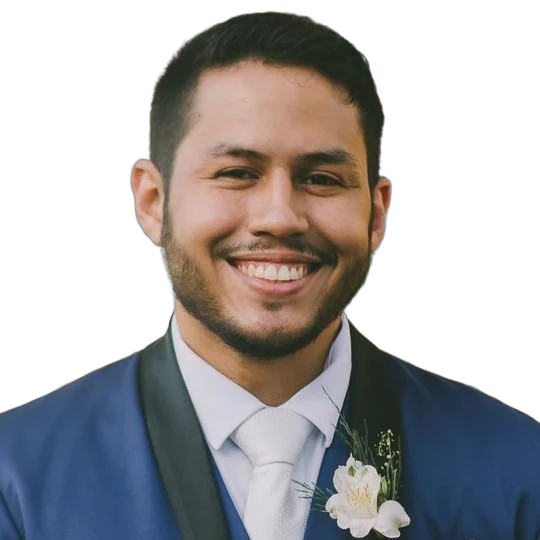
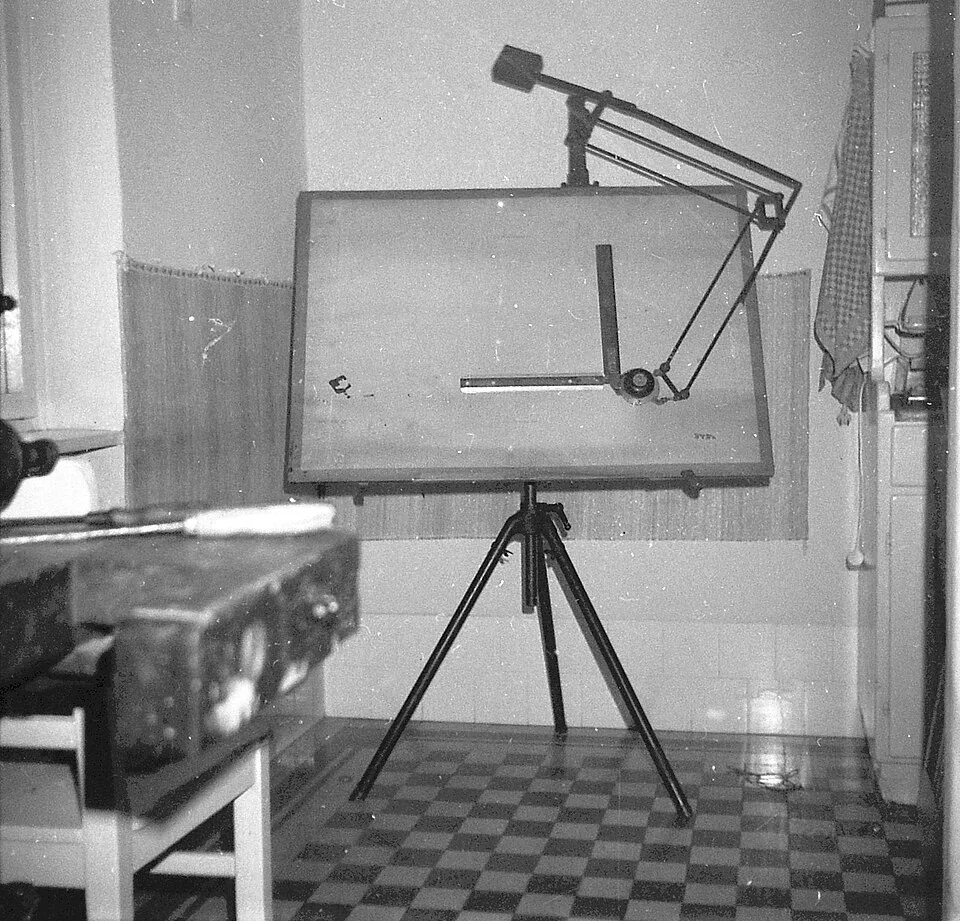

David Jorshuam
Analista de Dados Sênior em Fortaleza
Escrevo SQL sobre o Data Lake de uma operadora de saúde, monto pipelines em Python, mantenho dashboards em Power BI e coloco automações e aplicações web no ar com Docker. Nos projetos mais recentes entrou IA: RAG com pgvector, servidores MCP e agentes de código.

Pergunte sobre o David
Em números
- 5sistemas de automação em Linux e Docker, no ar 24 horas
- 40+features especificadas antes do código num projeto de modernização
- 234tabelas validadas numa migração Postgres de ~767 MB
- 9agentes de Claude Code versionados num projeto de Power BI, com 5 skills
Do dado bruto ao sistema em produção
- Formação
- Engenharia Mecânica e MBA em Gestão Analítica com BI e Big Data, ambos na Unifor
- Idiomas
- Português nativo, inglês intermediário
Trabalho com o ciclo inteiro de dados: consulta, integração, modelo, painel e a automação que mantém tudo rodando.
No dia a dia são consultas SQL avançadas sobre o Data Lake corporativo, pipelines ETL/ELT em Python que integram APIs, Pentaho e bancos relacionais, e dashboards em Power BI com DAX e Power Query. Tudo sob as normas da ANS e com cuidado de LGPD em dados sensíveis.
Nos últimos projetos fui além do BI: transformei um painel legado numa aplicação Node.js com PostgreSQL, migrei um banco para Supabase self-hosted e construí um classificador de relatos com RAG.
Venho da Engenharia Mecânica e da análise de processos industriais, de onde trouxe o hábito de mapear o processo antes de automatizá-lo. Na Unifor, fui monitor de Algoritmos e de Termodinâmica.
Experiência
Da prancheta de projetos mecânicos à engenharia de dados, passando por processos industriais.

Projetos
Os corporativos estão em repositórios privados e aparecem descritos sem nomes internos. Os pessoais têm link quando o código é público.